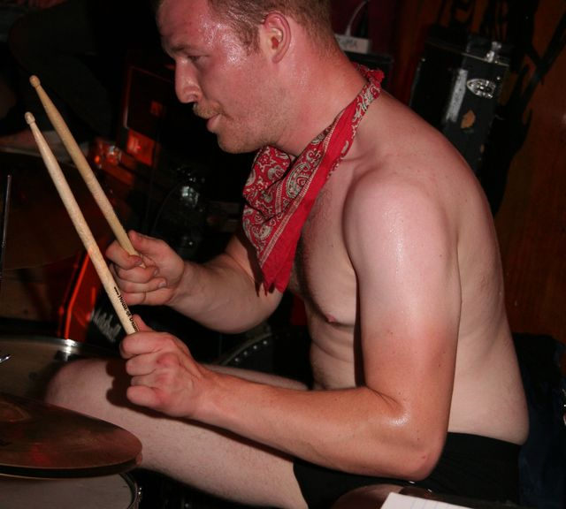
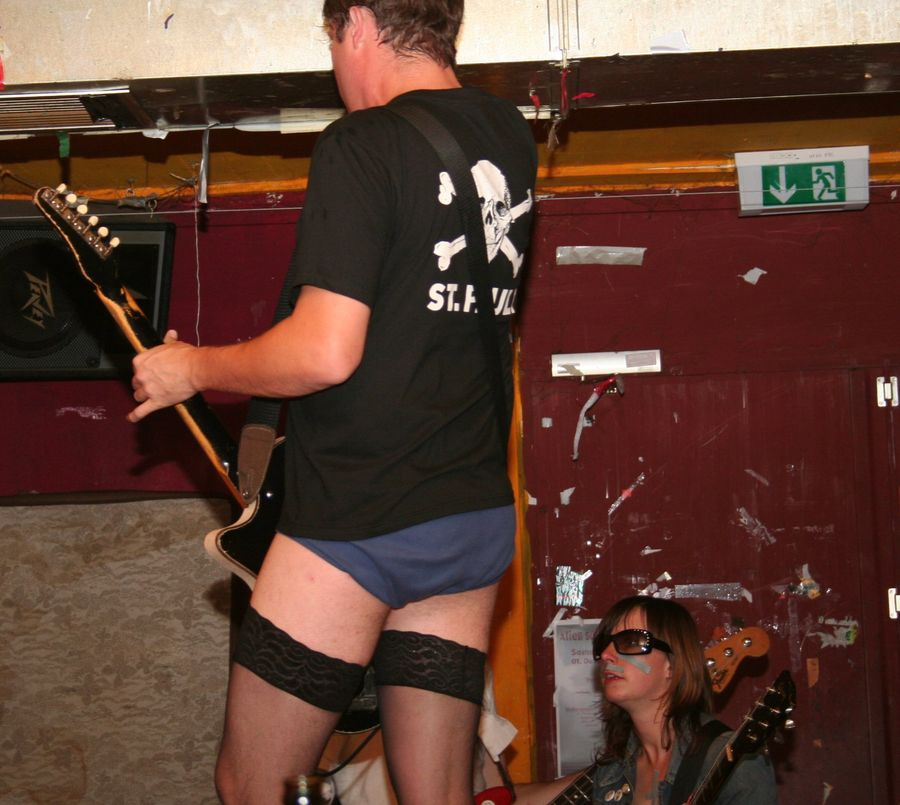
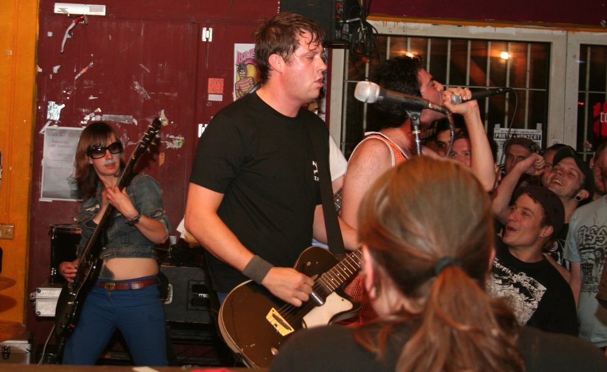
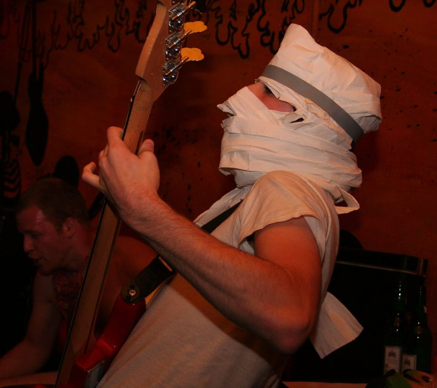
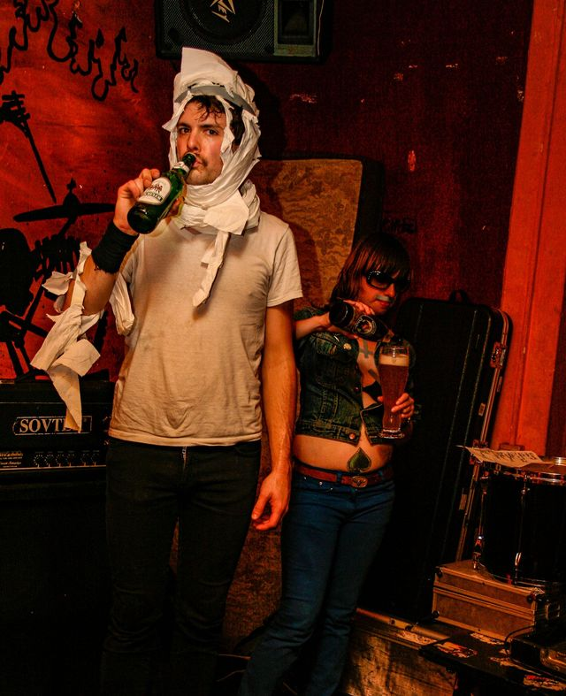

Vor dem Tourbus
Pogoradio
So, wir stehen jetzt direkt vor dem Tourbus von Brutal Knights. Zur Unterstützung ist noch jemand dabei. Wie heißt du?
Annik
Annik, von den Kölner Super-Rockstars der Elektro-Indie-Clash-Hardcore-Kitty-Punk-Szene: Zosch, mit Ausrufezeichen.
Pogoradio
Und du bist extra aus Köln hergekommen, wegen Brutal Knights?
Annik
Ich bin gerade mit Brutal Knights auf Tour. Als Krücke, Kartenleserin, Unterhalterin und moralische Unterstützung. Eigentlich auch als Fahrerin, aber mit kaputtem Knie geht das schlecht.
40 Tage, zwei Autos
Pogoradio
Ihr seid auf Europatour. Wie lange?
Brutal Knights
40 Tage. Fast ganz Europa: Prag, England, Wales, Schottland, Italien, Spanien, Deutschland, Schweden, Dänemark, Norwegen, Belgien, die Niederlande und Österreich.
Diesmal haben wir zwei Autos verschlissen. Das erste war ein blaues, wunderschön anzusehen, aber die Türen haben sich verriegelt, und wir haben sie nicht mehr aufgekriegt. Irgendwann ist das ganze Auto in Paris einfach stehen geblieben. Getriebe kaputt.
In den USA waren wir schon 18 Tage am Stück unterwegs, mit Fahrten von 12, 15, sogar 24 Stunden. In Europa sitzt man auch die meiste Zeit im Auto. Wir legen besonderen Wert darauf, an möglichst vielen Raststätten in ganz Europa anzuhalten.
Szene
John, der Schlagzeuger, löffelt Honig pur aus dem Glas. Die Band hat dafür einen Vergleich, der hier nicht steht.
Brutal Knights
„Honig“, so heißt das. Ich spreche Deutsch aus wie Hebräisch, weil ich Jude bin. Das ist meine kleine Rache.
Pogoradio
Wo kommt ihr her?
Brutal Knights
Ich bin in Toronto geboren und aufgewachsen. John Power am Schlagzeug ist in Neufundland geboren, dem besten Ort überhaupt.

„Ich spreche Deutsch aus wie Hebräisch, weil ich Jude bin. Das ist meine kleine Rache.“
Kässpätzle und 14.000 Filme
Pogoradio
Ich hab gehört, gestern waren drei von euch im Sexshop und haben die Kabinen benutzt. Bis zum Schluss.
Brutal Knights
Deutschland scheint die Welthauptstadt der Pornokäufer zu sein. Im Sexshop war gefühlt die Hälfte Kackporno. Auf einem Cover war nur ein Schmortopf mit gezeichneten Stinklinien, daneben eine Hand mit einem Stück Kacke.
Ich habe immer noch keine Kässpätzle gefunden. Mir wurden Kässpätzle versprochen, als ich in Mannheim ankam. Dann bin ich abgelenkt worden, weil ich mir im Pornoladen einen runtergeholt habe.
Pogoradio
Diese Sache mit dem Wichsen im Pornoladen: Der hatte 14.000 Filme!
Brutal Knights
Man sollte nicht masturbieren, dann wird man klüger. Fragt Einstein oder Gandhi. Juden masturbieren übrigens nie am Freitag. Und Selbstbefriedigung ist der beste Sex: Solange du nicht in den Spiegel schaust, siehst du nie einen enttäuschten Blick.
Und die Beschneidung entfernt einen ziemlich wichtigen Teil. In den 50ern hat man das angeblich aus Hygienegründen gemacht, weil man Angst vor Kommunisten hatte. Kanadier sind beschnitten, außer in Neufundland. Im Norden Kanadas macht man das mit der Axt oder dem Eispickel.

Bier ohne Ende, Tür um zehn zu
Pogoradio
Was war der schlimmste Ort auf eurer Europatour?
Brutal Knights
Belgien war großartig. Wir haben in einem Laden namens The Pit’s gespielt, die haben die ganze Nacht gefeiert, Bier ohne Ende. Gespielt haben wir ungefähr fünf Schritte vom Männerklo entfernt.
Am schlimmsten war eine Kleinstadt in Schweden, Linköping, in einem Jugendzentrum. Elend. 20 Kids. Und um zehn haben sie die Tür abgeschlossen, damit keiner mehr rausgehen kann.
Warum Europa
Pogoradio
Warum tourt ihr lieber in Europa als in den USA oder in Kanada?
Brutal Knights
Das ist eine riesige Gelegenheit zu reisen, jeden Tag eine andere Kultur. Und in Deutschland ist die Gastfreundschaft für Punkbands meilenweit voraus.
Die Punkläden in Europa sind eng miteinander verbunden, alle haben ein gemeinsames Gefühl dafür, was man für Bands tut. Wir haben im Blitz in Oslo gespielt, einem besetzten Haus mitten in der Stadt. Im Zoro in Leipzig, in einem besetzten Haus in Bielefeld. Viele besetzte Häuser sind inzwischen legal, in Potsdam zum Beispiel, oder das Kafe Kult in München. Das Geld, das sie bei der Miete sparen, geht an die Bands oder ins Essen.
In Deutschland ist jeder mit jedem verbunden. Die Leute, die Konzerte veranstalten, spielen selbst in Bands. Und für Jugendzentren wie hier in Mannheim zahlt der Staat die Miete.
Das Baskenland in Spanien war auch großartig, die haben ihre eigene Punkszene. An einem Dienstagabend kamen 60 Leute, und sie haben uns einen Schlafplatz gegeben, Abendessen und Frühstück.
Pogoradio
Und mit welcher Band spielt ihr am liebsten?
Brutal Knights
Career Suicide.

Matratzenschlacht in Mailand
Pogoradio
Was war die seltsamste Situation auf der Tour?
Brutal Knights
Ein Konzert in Mailand, am Wasser, in einer kleinen Garage am Fluss. Die haben einen Kuchenverkauf gemacht, um Geld für uns zu sammeln.
Und dann haben acht Leute vorne dreckige Matratzen hochgehoben und sind damit aufeinander losgegangen, während wir gespielt haben. Unsere Gitarristin Katie wurde mit einer Matratze umgehauen, wir mussten den Song abbrechen.

Wer vorne tanzt
Pogoradio
Wie ist das mit Frauen in der Punkszene?
Brutal Knights
In Toronto gibt es eine coole queere Punkszene, die Will Munro organisiert. Und in jeder Stadt in Europa gibt es Mädchen, die auf Konzerte gehen. Aber Punkrock ist so aggressiv, dass es für Männer und Frauen schwer ist, vorne sicher zu tanzen.
Sartre, Camus und Katie
Pogoradio
Worum geht es in euren Texten?
Brutal Knights
Unsere Texte sind politisch korrekt und basieren auf Sartre und Camus.
Pogoradio
Und „Katie Wants a Cock“?
Brutal Knights
Der Song handelt von Katie aus der Band. Sie hat mal gesagt, sie würde gern Typen kennenlernen. Aber der Song sagt: Sex ist nicht gut, sie braucht eine Ausbildung oder ein Baby.
Katie ist eine kluge, unabhängige Frau. Sie ist die Gitarristin der Band und weiß mehr über Musik als die meisten Leute.
So, wir müssen jetzt aufbauen.
„Unsere Texte sind politisch korrekt und basieren auf Sartre und Camus.“

Aus dem Englischen übersetzt, gekürzt und geglättet. Die Aufnahme besteht aus zehn Teilstücken, einige Fragen sind sinngemäß ergänzt. Die Antworten der Band stehen gesammelt unter „Brutal Knights“.